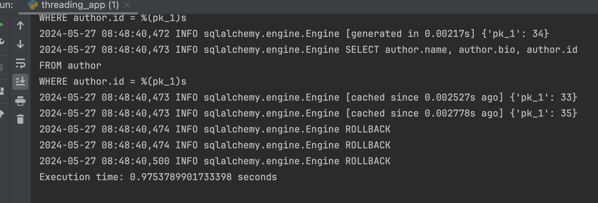
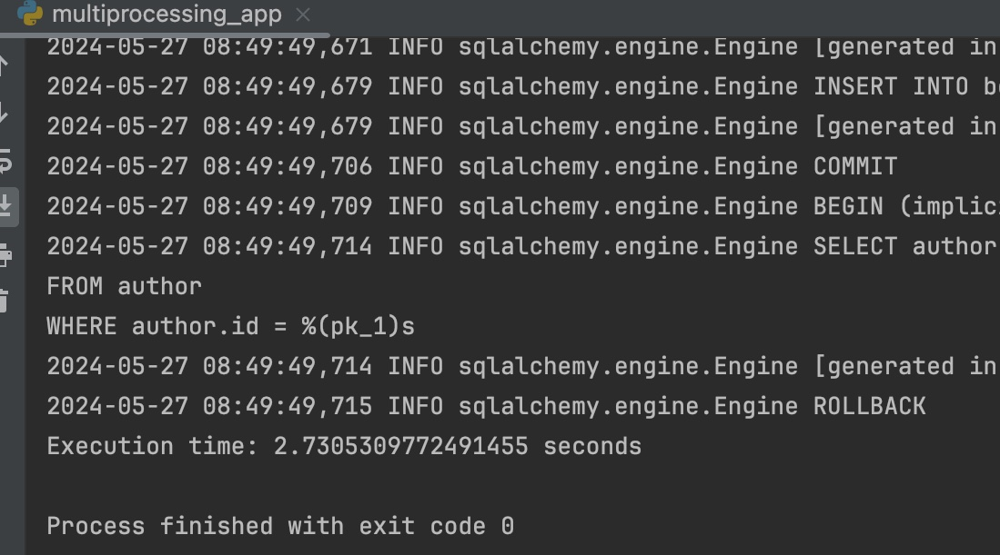
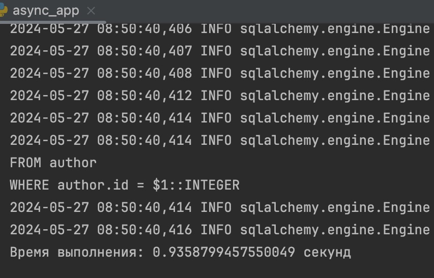

Task 2
Описание
Напишите программу на Python для параллельного парсинга нескольких веб-страниц с сохранением данных в базу данных с использованием подходов threading, multiprocessing и async.
Models
import datetime
from typing import Optional, List
from pydantic import validator, EmailStr
from sqlmodel import SQLModel, Field, Relationship, AutoString
from enum import Enum
class ExchangeStatus(Enum):
agreed = "agreed"
rejected = "rejected"
notselected = "not selected"
# book instance
class BookInstanceBase(SQLModel):
book_id: Optional[int] = Field(default=None, foreign_key="book.id")
date: datetime.datetime
publisher: str
features: str
class BookInstance(BookInstanceBase, table=True):
id: int = Field(default=None, primary_key=True)
owner_id: Optional[int] = Field(default=None, foreign_key="user.id")
requests: Optional[List["BookExchange"]] = Relationship(
back_populates="book_instance",
sa_relationship_kwargs=dict(foreign_keys="[BookExchange.book_instance_id]"),
)
book: Optional["Book"] = Relationship(back_populates="instances")
owner: Optional["User"] = Relationship(back_populates="instances")
class BookInstanceRead(BookInstanceBase):
id: int
owner_id: int
class BookInstanceWithBook(BookInstanceRead):
book: "BookRead" = None
class BookInstanceReadFull(BookInstanceWithBook):
requests: list["BookExchangeRead"] = []
owner: "UserBase" = None
# author
class AuthorBase(SQLModel):
name: str
bio: str
class Author(AuthorBase, table=True):
id: int = Field(default=None, primary_key=True)
books: Optional[List["Book"]] = Relationship(back_populates="author")
class AuthorRead(AuthorBase):
id: int
class AuthorReadFull(AuthorRead):
books: list["BookRead"] = []
# book
class BookBase(SQLModel):
title: str
description: str
author_id: Optional[int] = Field(default=None, foreign_key="author.id")
class Book(BookBase, table=True):
id: int = Field(default=None, primary_key=True)
author: Optional[Author] = Relationship(back_populates="books")
owners: Optional[List["User"]] = Relationship(back_populates="books", link_model=BookInstance)
instances: Optional[List["BookInstance"]] = Relationship(back_populates="book")
class BookRead(BookBase):
id: int
class BookReadFull(BookRead):
author: AuthorRead = None
owners: list["UserBase"] = []
instances: list["BookInstanceRead"] = []
# user
class UserBase(SQLModel):
id: int = Field(primary_key=True)
username: str = Field(index=True)
name: str
about: str
email: EmailStr = Field(unique=True, index=True, sa_type=AutoString)
class User(UserBase, table=True):
password: str = Field(max_length=256, min_length=6)
created_at: datetime.datetime = datetime.datetime.now()
books: Optional[List["Book"]] = Relationship(back_populates="owners", link_model=BookInstance)
sender_requests: Optional[List["BookExchange"]] = Relationship(
back_populates="sender",
sa_relationship_kwargs=dict(foreign_keys="[BookExchange.sender_id]"),
)
receiver_requests: Optional[List["BookExchange"]] = Relationship(
back_populates="receiver",
sa_relationship_kwargs=dict(foreign_keys="[BookExchange.receiver_id]"),
)
instances: Optional[List["BookInstance"]] = Relationship(back_populates="owner")
class UserReadFull(UserBase):
sender_requests: list["BookExchangeRead"] = []
receiver_requests: list["BookExchangeRead"] = []
instances: list["BookInstanceWithBook"] = []
class UserInput(SQLModel):
name: str
about: str
username: str
password: str = Field(max_length=256, min_length=6)
password2: str
email: EmailStr = Field(unique=True, index=True, sa_type=AutoString)
@validator('password2')
def password_match(cls, v, values, **kwargs):
if 'password' in values and v != values['password']:
raise ValueError('passwords don\'t match')
return v
class UserLogin(SQLModel):
username: str
password: str
class UserPassword(SQLModel):
old_password: str
new_password: str
# book exchange
class BookExchangeBase(SQLModel):
book_instance_id: Optional[int] = Field(default=None, foreign_key="bookinstance.id")
status: ExchangeStatus
date_start: datetime.datetime
date_end: datetime.datetime
class BookExchange(BookExchangeBase, table=True):
id: int = Field(default=None, primary_key=True)
sender_id: Optional[int] = Field(default=None, foreign_key="user.id")
receiver_id: Optional[int] = Field(default=None, foreign_key="user.id")
sender: Optional["User"] = Relationship(
back_populates="sender_requests",
sa_relationship_kwargs=dict(foreign_keys="[BookExchange.sender_id]"),
)
receiver: Optional["User"] = Relationship(
back_populates="receiver_requests",
sa_relationship_kwargs=dict(foreign_keys="[BookExchange.receiver_id]"),
)
book_instance: Optional["BookInstance"] = Relationship(
back_populates="requests",
sa_relationship_kwargs=dict(foreign_keys="[BookExchange.book_instance_id]"),
)
class BookExchangeChangeStatus(SQLModel):
status: ExchangeStatus
class BookExchangeRead(BookExchangeBase):
id: int
sender_id: int
receiver_id: int
class BookExchangeReadFull(BookExchangeRead):
sender: "UserBase" = None
receiver: "UserBase" = None
book_instance: "BookInstanceWithBook" = None
Функции для парсинга
def parse_author_info(url):
# Отправляем GET-запрос к веб-странице
response = requests.get(url)
# Создаем объект BeautifulSoup для парсинга содержимого страницы
soup = BeautifulSoup(response.text, 'html.parser')
# Извлекаем имя автора
author_name = soup.find('h1', class_='Author_authorName__i4Wxb').text.strip()
# Извлекаем список книг
books_elements = soup.find_all('p', class_='ArtInfoTile_title__TCqN1')
books = [book.text.strip() for book in books_elements]
# Формируем словарь с данными об авторе и его книгах
author_data = {
'author_name': author_name,
'books': books
}
# Преобразуем словарь в JSON
json_data = json.dumps(author_data, ensure_ascii=False)
return json_data
async def parse_author_info(url):
async with aiohttp.ClientSession(connector=aiohttp.TCPConnector(ssl=False)) as session:
html = await fetch(session, url)
soup = BeautifulSoup(html, 'html.parser')
author_name = soup.find('h1', class_='Author_authorName__i4Wxb').text.strip()
books_elements = soup.find_all('p', class_='ArtInfoTile_title__TCqN1')
books = [book.text.strip() for book in books_elements]
author_data = {
'author_name': author_name,
'books': books
}
json_data = json.dumps(author_data, ensure_ascii=False)
return json_data
Функции для сохранения данных в бд
def save_author_and_books_from_json(data: str):
# Декодирование JSON-данных
data_dict = json.loads(data)
# Создание сессии
session = SessionLocal()
try:
# Извлечение данных об авторе из JSON
author_name = data_dict.get('author_name')
if not author_name:
raise ValueError("Недостаточно данных для сохранения.")
# Создание объекта Author
author = Author(name=author_name, bio="")
# Извлечение списка книг из JSON
book_titles = data_dict.get('books')
if not book_titles:
raise ValueError("Не указан список книг для сохранения.")
# Создание объектов Book и их добавление к автору
books = [Book(title=title, description="", author=author) for title in book_titles]
# Добавление объектов в сессию
session.add(author)
session.add_all(books)
# Сохранение изменений
session.commit()
session.refresh(author)
return author, books
finally:
# Закрытие сессии
session.close()
async def save_author_and_books_from_json(data: str):
# Декодирование JSON-данных
data_dict = json.loads(data)
# Создание асинхронной сессии
async with AsyncSession(engine) as session:
# Извлечение данных об авторе из JSON
author_name = data_dict.get('author_name')
if not author_name:
raise ValueError("Недостаточно данных для сохранения.")
# Создание объекта Author
author = Author(name=author_name, bio="")
# Извлечение списка книг из JSON
book_titles = data_dict.get('books')
if not book_titles:
raise ValueError("Не указан список книг для сохранения.")
# Создание объектов Book и их добавление к автору
books = [Book(title=title, description="", author=author) for title in book_titles]
# Добавление объектов в сессию
session.add(author)
session.add_all(books)
# Сохранение изменений
await session.commit()
# Запрос на получение сохраненного автора
await session.refresh(author)
return author, books
Async
import asyncio
import aiohttp
import json
from save_data_async import save_author_and_books_from_json
from async_parser import parse_author_info
import time
# Список URL-адресов для парсинга
urls = ["https://www.litres.ru/author/patrik-king/",
"https://www.litres.ru/author/vladimir-pozner/",
"https://www.litres.ru/author/allan-dib/"]
async def parse_and_save(url):
author_info = await parse_author_info(url)
await save_author_and_books_from_json(author_info)
async def main():
start_time = time.time()
tasks = []
for url in urls:
task = asyncio.create_task(parse_and_save(url))
tasks.append(task)
await asyncio.gather(*tasks)
end_time = time.time()
print(f"Время выполнения: {end_time - start_time} секунд")
if __name__ == "__main__":
asyncio.run(main())
Multiprocessing
import multiprocessing
from parser import parse_author_info
from save_data import save_author_and_books_from_json
import time
# Список URL-адресов для парсинга
urls = [
"https://www.litres.ru/author/patrik-king/",
"https://www.litres.ru/author/vladimir-pozner/",
"https://www.litres.ru/author/allan-dib/"
]
# Функция для параллельного парсинга и сохранения данных
def parallel_parse_and_save(chunk):
for url in chunk:
author_info = parse_author_info(url)
save_author_and_books_from_json(author_info)
# Функция для засечения времени исполнения и запуска парсинга
def measure_execution_time():
start_time = time.time()
# Разделение списка URL-адресов на равные части (chunks)
num_processes = len(urls)
chunk_size = len(urls) // num_processes
chunks = [urls[i:i+chunk_size] for i in range(0, len(urls), chunk_size)]
# Создание процессов для параллельного парсинга
processes = []
for chunk in chunks:
process = multiprocessing.Process(target=parallel_parse_and_save, args=(chunk,))
processes.append(process)
process.start()
# Ожидание завершения всех процессов
for process in processes:
process.join()
end_time = time.time()
execution_time = end_time - start_time
print(f"Execution time: {execution_time} seconds")
if __name__ == '__main__':
# Вызов функции для засечения времени исполнения и запуска парсинга
measure_execution_time()
Threading
import threading
from parser import parse_author_info
from save_data import save_author_and_books_from_json
import time
# Список URL-адресов для парсинга
urls = [
"https://www.litres.ru/author/patrik-king/",
"https://www.litres.ru/author/vladimir-pozner/",
"https://www.litres.ru/author/allan-dib/"
]
# Функция для параллельного парсинга и сохранения данных
def parallel_parse_and_save(urls):
for url in urls:
author_info = parse_author_info(url)
save_author_and_books_from_json(author_info)
# Функция для засечения времени исполнения и запуска парсинга
def measure_execution_time():
start_time = time.time()
# Разделение списка URL-адресов на равные части
num_threads = 3
chunk_size = len(urls) // num_threads
chunks = [urls[i:i + chunk_size] for i in range(0, len(urls), chunk_size)]
# Запуск параллельного парсинга для каждой части
threads = []
for chunk in chunks:
thread = threading.Thread(target=parallel_parse_and_save, args=(chunk,))
thread.start()
threads.append(thread)
# Ожидание завершения всех потоков
for thread in threads:
thread.join()
end_time = time.time()
execution_time = end_time - start_time
print(f"Execution time: {execution_time} seconds")
# Вызов функции для засечения времени исполнения и запуска парсинга
measure_execution_time()
Результаты
Расход ресурсов на мультипроцессинг не оправдан, поэтому он отрабатывет дольше. Async and threading отрабатывают примерно одинаково.
  